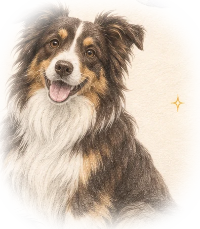
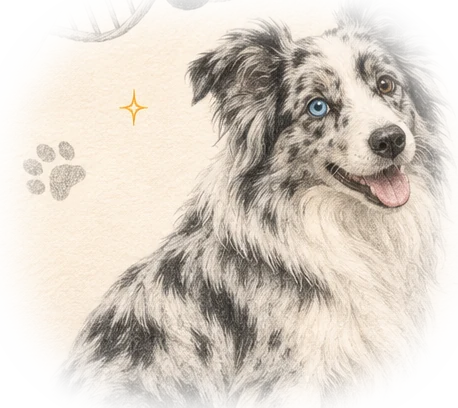
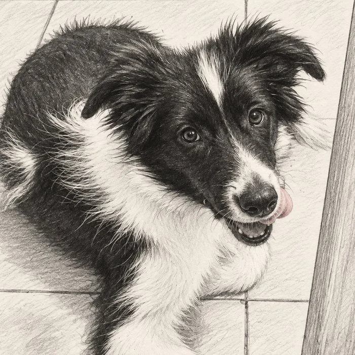
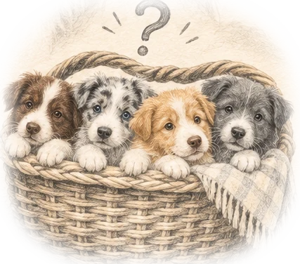

סקר היתכנות
תיק מס׳ BC-001
א
ב
ו
ד
י
ם
גרסת הבורדר קולי
התוכנית שמאחדת משפחות. הפעם על ארבע.

אבא?

אמא?

הכלב/ה שלך
דו״ח נעדרים
מבוקשים: הורים, אחים מהשגר, צאצאים
סימנים: עיניים חכמות, בלי סוף אנרגיה

אחים מהשגר?
תיק פתוח
כל בורדר קולי הגיע ממשפחה. איפה היא היום?
אנחנו רוצות לבנות אפליקציה שתעזור למצוא קרובים: אחים מאותו שגר או מאותם הורים, הורים וצאצאים שגדלים בבתים אחרים בארץ. לפני שמתחילים, בודקות כמה בעלים ירצו להצטרף.
איך זה עובד?
1
נרשמים לרשימת המתעניינים
טופס קצר: שם הכלב/ה, אילו קרובים מחפשים ופרטי קשר
2
אם יהיה מספיק עניין, בונות
ההרשמה עוזרת לנו להבין אם יש למי לבנות
3
מחפשים קרובים באפליקציה
נעדכן בוואטסאפ או במייל כשההרשמה תיפתח
בטופס שואלים רק
- איך קוראים לבורדר קולי שלך
- אילו קרובים היית רוצה למצוא
- שם ומספר לוואטסאפ
- מייל לעדכונים
אולי מישהו מחכה לכם בצד השני של הארץ
למילוי הטופס
ההרשמה לא מחייבת. הטופס נפתח ב-Google Forms
שלחו לחברים עם בורדר קולי
אף בורדר קולי לא נשאר אבוד